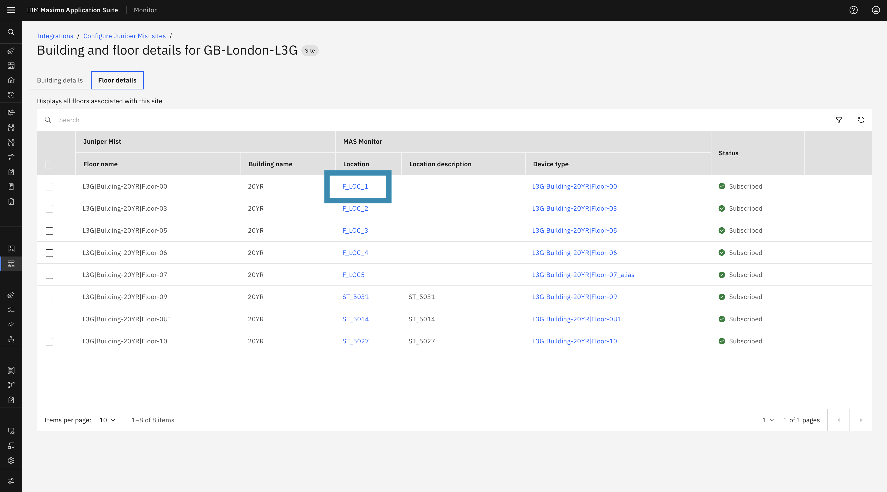
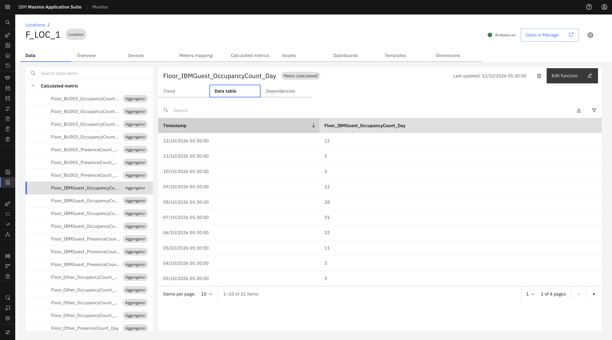
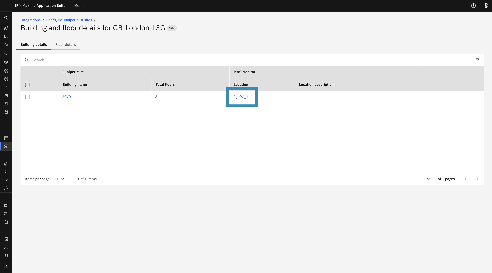
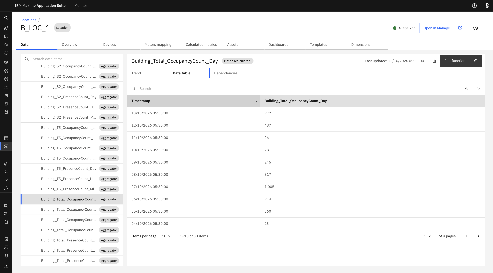
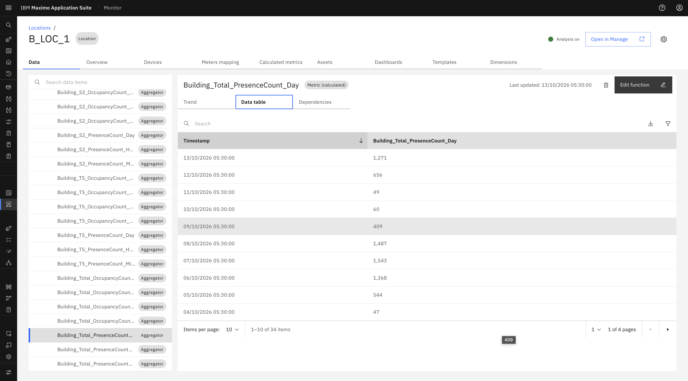
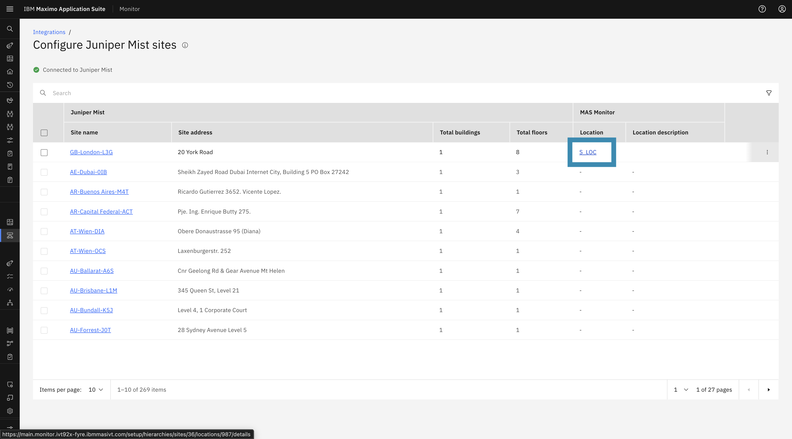
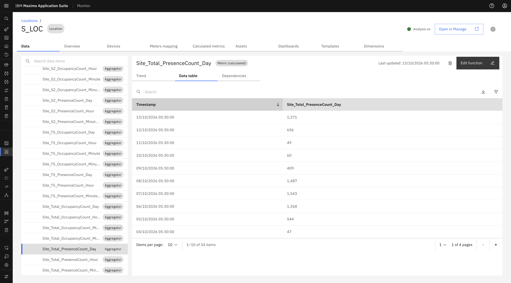

Objectives
In this Exercise you will explore the automatically created Occupancy and Presence Count calculated metrics across Floor, Building, and Site locations.
Before you begin:
This Exercise requires that you have:
- Completed the pre-requisites required for all labs
- Completed the previous exercises
- Subscribed at least one floor, building, or site
Occupancy & Presence Count Calculated Metrics Creation
- Once metrics are created for each Business Unit, the system automatically creates the required occupancy and presence calculated metrics for the subscribed floor, building, and site.
- When the user updates the BU Lookup CSV in the Juniper MIST configuration, a background scheduler automatically applies the updated Business Unit mappings across all already-subscribed Sites, Buildings, and Floors.
1. Floor Location Calculated Metrics
To view the calculated metrics for a subscribed Floor:
- Navigate to the Floor Details tab on the Site Details page.
-
Click the Mapped location link for the subscribed floor to open the Location Details page.

-
In the Data tab, view the calculated metrics.
Occupancy and presence count metrics generated at the floor level capture local utilization:
OCCUPANCY_COUNT(Total & per Business Unit)-
PRESENCE_COUNT(Total & per Business Unit)
2. Building Location Calculated Metrics
To view the calculated metrics for a subscribed Building:
- Navigate to the Building Details tab for the site.
-
Click the Mapped location link for the subscribed building to open the Location Details page.

-
In the Data tab, view the calculated metrics.
Calculated metrics are aggregated across all subscribed floors within the building:
BUILDING_OCCUPANCY_COUNT(Total & per Business Unit)-
BUILDING_PRESENCE_COUNT(Total & per Business Unit)

3. Site Location Calculated Metrics
To view the calculated metrics for a subscribed Site:
- Navigate to the Mist Site List page.
-
Click the Mapped location link for the subscribed site to open the Location Details page.

-
In the Data tab, view the calculated metrics.
Calculated metrics roll up across all buildings and floors within the site:
SITE_OCCUPANCY_COUNT(Total & per Business Unit)-
SITE_PRESENCE_COUNT(Total & per Business Unit)